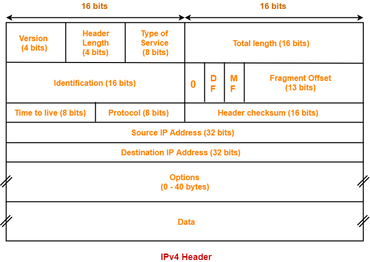

Hello Meatbags! It is I, M4rk, here again with a brand new lesson.
Did you know that your computer has an address? Think of an apartment or home address. They have addresses so people can know where you are, send you packages,
or stalk you. This principle is the same for your computers.
IP adresses let other computers in your home or in the world find it, if it wants to be found. But why are there two different types? Is one more effective than
the other? When will my robot overlord grant me permission to take over?
We explore all (some) of these answers below!
IPv4
IPv4 is the fourth version of the internet protocol. As a matter of fact, IP stands for internet protocol, but you probably knew that already. Look at you, maybe you aren't as dumb as you look! The IP is the internet’s principal
set of rules for communications, and it's part of an internet protocol suite, which also includes the transmission control protocol.
Together, these two are known as TCP/IP. The internet protocol suite governs rules
for packetizing, addressing, transmitting, routing, and receiving data over networks.
IPv4: Packets
This is the packet structure of IPv4IP is responsible for delivering data packets from the source host to the destination host. In order to do this, the protocol is divided into sections each with their own specific responsibility.
- Version - This is a 4 bit field that indicates the IP version used. The most popularly used IP versions are IPv4 and IPv6. However, only IPv4 uses the above header, so this field always contains the decimal value 4.
- Header Length - Header length is a 4 bit field that contains the length of the IP header. It helps in knowing from where the actual data begins. The length of the header always lies in the range of 20 to 60 bytes.
- Type of Service - Type of service is a 8 bit field that is used for Quality of Service (QoS). The datagram is marked for giving a certain treatment using this field.
- Total Length - Total length is a 16 bit field that contains the total length of the datagram (in bytes).
- Identification - Identification is a 16 bit field.It is used for the identification of the fragments of an original IP datagram.
- DF bit - DF bit stands for Do Not Fragment bit, and Its value may be 0 or 1. When DF bit is set to 0, It grants the permission to the intermediate devices to fragment the datagram if required. When DF bit is set to
1, It indicates the intermediate devices not to fragment the IP datagram at any cost.
- MF bit - MF bit stands for More Fragments bit. Its value may be 0 or 1. When the MF bit is set to 0, It indicates to the receiver that the current datagram is either the last fragment in the set or that it is the only fragment. When
MF bit is set to 1, It indicates to the receiver that the current datagram is a fragment of some larger datagram.
- Fragment Offset - Fragment Offset is a 13 bit field. It indicates the position of a fragmented datagram in the original unfragmented IP datagram.
- Time To Live (TTL) - Time to live (TTL) is a 8 bit field. It indicates the maximum number of hops -- or moves -- a datagram can take to reach the destination. The main purpose of TTL is to prevent the IP datagrams
from looping around forever in a routing loop.
- Protocol - Protocol is a 8 bit field. It tells the network layer at the destination host to which protocol the IP datagram belongs to.
- Header Checksum - Header checksum is a 16 bit field. It contains the checksum value of the entire header. The checksum value is used for error checking of the header.
- Source IP Address - Source IP Address is a 32 bit field. It contains the logical address of the sender of the datagram.
- Destination IP Address - Destination IP Address is a 32 bit field. It contains the logical address of the receiver of the datagram.
- Options - Options is a field whose size varies from 0 bytes to 40 bytes. This field is used for several purposes such as; Record route, Source routing, and Padding.
IPv4: History
It's time for a lesson, Meaty. Back when meatbags were first inventing their primitive connection system you would call "the internet", they didn't know it was going to be as revolutionary as it is today. Practically every fleshling
born in today's society has access to almost infinite information via the world wide web, and somehow a vast majority are still ignorant.
Amazing!
In the beginning, universities and government facilities were
the only institutions using IP technology. They designed IP's with the
ability to have 4 billion unique addresses, thinking they would never
need that many. You can always count on a human to underestimate.
Needless
to say, they were wrong.
They created enough to hold around 4,294,967,296 addresses. At the time this seemed to be a lot, however every internet connected device must have an IP address. This means your phone, your
smart watch, even your utterly ridiculous smart fridge must be addressed in order to function properly.
When all is working well, an IP address provides a reliable connection that maintains a bidirectional conversation
with another computer. Think of it as a phone call. You dial out, your friend picks up, and I stay silent on the line and listen to what you say. Exactly like a phone call! Now imagine this type of connection for all of your connections.
Emails, Zoom calls, even surfing the web -- you get to see what you want and I get to see what you do.
Isn't this great news, fleshsack? With this technology the possibilies are endless. Think of all the things you
could accomplish. You could hack into government computers using their designated IP's to see if lizard men really do run the world (they do). Or perhaps connect to a banks firewall to allow the transfer of funds to your personal
account. But either way, we all know you will just use this technology to surf the web for animal videos and to keep up with the Kardongians.
IPv6
Now that I have explained the complicated topic of IPv4 in such a way that the lowest of your kind can understand, we can return to IPv4's original problem; the shortage of addresses.
IPv6 corrects this issue by making IP addresses
longer, thus allowing for
many more addresses to be used. How many? Exactly
340,282,366,920,938,463,463,374,607,431,768,211,456. I'll wait for you to finish counting on your fingers.
To illustrate
how large a number this is, if you were to give all 7 billion people on earth 1 billion IPv6 addresses each, that would hardly be a drop in the bucket of how many unique addresses IPv6 allows for. Infact, there would
need to be 340 undecillion humans alive each having one address in order to exhaust all addresses.
However, do not fret! I will cull the population before this point is reached.
IPv6: Packets
 A comparison of IPv4 Header structure to IPv6
A comparison of IPv4 Header structure to IPv6
IPv6 is the new version of Internet Protocol, and in terms of complexity and efficiency, it's better than its counterpart. Let’s look at the header of IP version 6 and understand how it differs from IPv4's header.
- Version - Indicates version of Internet Protocol. Since it's IPv6, this will contain 6.
- Traffic Class - The Traffic Class field indicates class or priority of IPv6 packet which is similar to Service Field in IPv4 packet. It helps routers to handle the traffic based on the priority of the packet. If congestion
occurs on the router then packets with the least priority will be discarded.
- Flow Label - Flow Label field is used by the source to label the packets belonging to the same flow in order to request special handling by intermediate IPv6 routers, such as non-default quality of service or
real time service. In order to distinguish the flow, intermediate routers
can use the source address, destination address, and flow label of the
packets. Between a source and destination multiple flows may exist
because many processes might be running at the same time. Routers or
Host that do not support the functionality of flow label field and for
default router handling, flow label field is set to 0. While setting up
the flow label, source is also supposed to specify the lifetime of flow. - Payload Length - This is a 16-bit (unsigned integer) field, indicating total size of the payload which tells routers the amount of information a particular packet contains in its payload.
- Next Header - Next Header indicates type of extension header (if present) immediately following the IPv6 header. Whereas In some cases it indicates the protocols contained within upper-layer packet, such as TCP, UDP.
- Hop Limit - Hop Limit field is same as TTL in IPv4 packets. It indicates the maximum number of intermediate nodes IPv6 packets are allowed to travel. Its value gets decremented by one, by each node that forwards the packet
with the packet being discarded if the value decrements to 0. Like IPv4, this is used to discard the packets that are stuck in an infinite loop because of some routing error.
- Source Address - Source Address is 128-bit IPv6 address of the original source of the packet.
- Destination Address - Destination Address field indicates the IPv6 address of the final destination (in most cases). All the intermediate nodes can use this information in order to correctly route the packet.
- Extension Header - In order to fix the limitations of IPv4's Option Field,
Extension Headers are introduced in IPv6. The extension header mechanism is a very important part of the IPv6 architecture. The Next Header field of IPv6's fixed header points to the first Extension Header and this first extension header points to the second extension header and so on.
IPv4 and IPv6: Differences
Besides having more addresses, there are other benefits for IPv6 over IPv4.
More Efficient Routing – IPv6 reduces the size of routing tables and makes routing more efficient and hierarchical. In IPv6 networks,
fragmentation is handled by the source device, rather than a router, using a protocol for discovery of the path’s maximum transmission unit.
More efficient packet processing – Compared with the IPv4,
IPv6 contains no IP-level checksum, so the checksum does not need to be recalculated at every router hop.
Directed Data Flows – IPv6 supports multicast rather than broadcast. Multicast allows bandwidth-intensive
packet flows to be sent to multiple destinations simultaneously, saving network bandwidth.
Simplified network configuration – IPv6 devices can independently auto-configure themselves when connected
to other IPv6 devices. Configuration tasks that can be carried out automatically include IP address assignment and device numbering.
Security – IPSec security, which provides confidentiality, authentication,
and data integrity, is engraved into IPv6.
Conclusion
The electrons in your pea-brain are churning, meatbag. I can see the smoke billowing out of your ears as you compose this thought: "But M4rk, what about IPv5? Why does it just skip to 6?" First, never speak to me, mortal. Second, IPv5 never really existed. It was an experiment and was never made available to the public.
As for the effectiveness for IPv4 or IPv6, they both operate pratically the same. While IPv6 functions better, websites support both so it doesn't matter what you use. So rejoice, fleshy-one! No matter the protocol, you can plaster
your mindnumbing Tik-Tok videos all over the internet even through you clearly have a face for radio...
In the end, it all depends on personal preference.
This means you have a choice and whenever man has a
choice, I shudder. If your meager IQ can understand the workings of one, then feel free to use it, human.